过去几天，英国多个城市发生13年来最大规模暴乱，连续多天上了全球媒体头条。身在英国的我也收到了国内亲朋好友们的关心和询问。
说实话，刚刚收到信息的时候我还觉得一切正常，毕竟新闻上伦敦时不时会出现暴力事件。
直到8月6日（伦敦时间），社交媒体上开始疯传一张地图，其中显示着极右翼分子将在8月7日晚八点选定了全英39个城/镇袭击移民办公室、移民企业，甚至涉及移民事务的律所。
英国比较大的城市如利物浦、伯明翰、布里斯托均被标注，还涉及到伦敦西北地区的四个城镇。
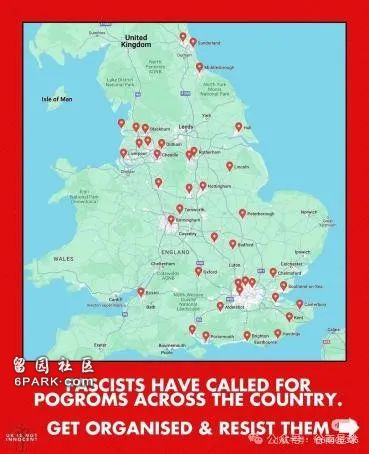
「暴动」消息据说是从暴动者群聊信息中泄露的，为了提防可能出现的社会动荡，政府临时抽调了6000多名警察严阵以待。
幸运的是，和上一周在其他城市的暴动（打砸抢烧、袭警等）相比，昨晚没有出现预警中的暴乱，反倒是许多目标城镇内爱好和平、反右翼的民众们走出家门，和平示威，反对极右翼分子。
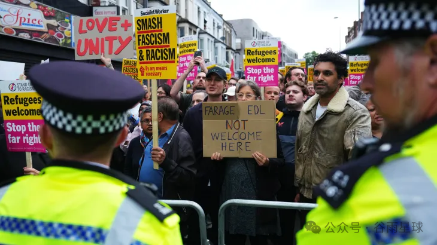
8月8日一早，伦敦地铁站提供的各大（免费）报纸都大版面报道了前一晚的事件，许多人认为危机解除。
但还有很多人认为，这只是反移民、种族主义、极端种族歧视的开始，在更长远的时间内，它关乎着留学安全、留学生就业机会、移民机会等等，并影响这里的每一个人。
那么，这场骚乱到底是如何开始的？接下来的趋势可能会如何？会影响留学生的正常学业生活吗？我从亲历者的视角聊一聊。
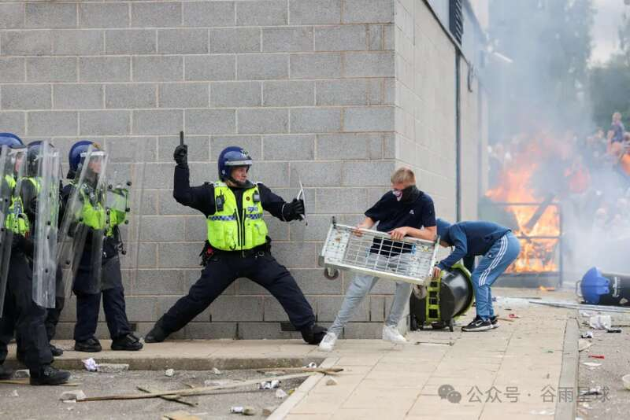
■8月4日，与警察对峙的暴乱者
导火索：3个女孩被杀害
7月29日，我留意到一则暴力事件新闻，英国绍斯波特（Southport,也称南港）发生一起持刀伤人事件。
事发地在一间舞蹈教室，事发时许多孩子正在上舞蹈课，一名17岁的青少年持刀袭击了正在学习舞蹈的儿童，当场造成多名儿童重伤，在送医之后，陆续有三名儿童死亡，她们分别是6岁、7岁和9岁。
稚嫩美好生命的消逝让当地人悲痛不已，事发之后，不仅有当地民众自发悼念，新任首相斯塔默也到现场致哀。
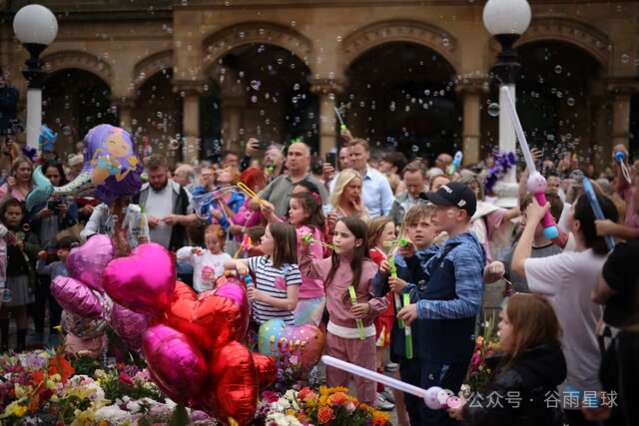
■8月5日，人们聚集在一起举行守夜活动，悼念这三个小女孩公众最初将目光聚焦在青少年犯罪上。然而随着凶犯被逮捕，身份逐渐公开，这个来自卢旺达移民家庭的18岁黑人男孩，出生在英国，并非「偷渡非法移民」，却迅速成为右翼分子反移民的大旗，种族仇恨迅速传播并且扩展到移民、难民、穆斯林群体上。同时从和平游行示威演变为暴力事件，也就是新闻联播和社交媒体上的「英国暴乱」。
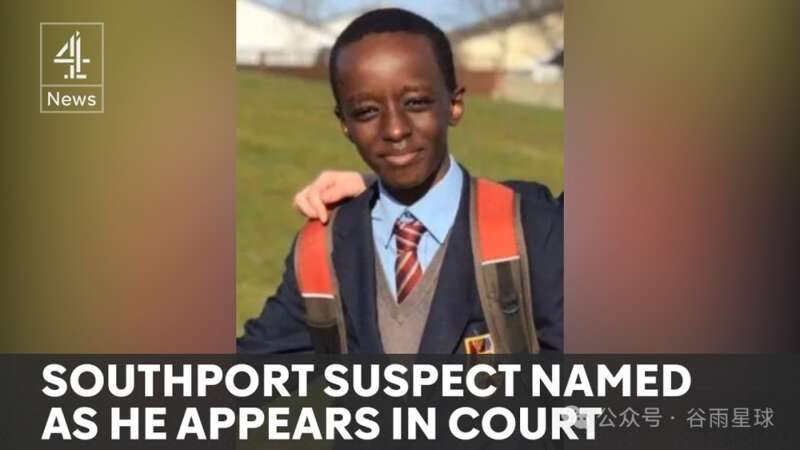
■这个男孩被指控犯有谋杀和谋杀未遂罪
在接下来几天内，英国许多大城市接连出现了打砸店铺、烧毁公共汽车、袭击警察等恶性报复性事件，甚至有演变成无差别伤害的趋势，许多城市的移民中心和难民居住地，甚至清真寺均成为被攻击的目标。
据BBC新闻报道，截止到8月8日（伦敦时间），超过500人因暴力骚乱被捕，其中150人会被判处监禁。
这场被BBC称为「近十年来英国最可怕的暴乱」还没有画上尾声，政府紧急召开了眼镜蛇会议，同时强调警方要保持高度警惕。
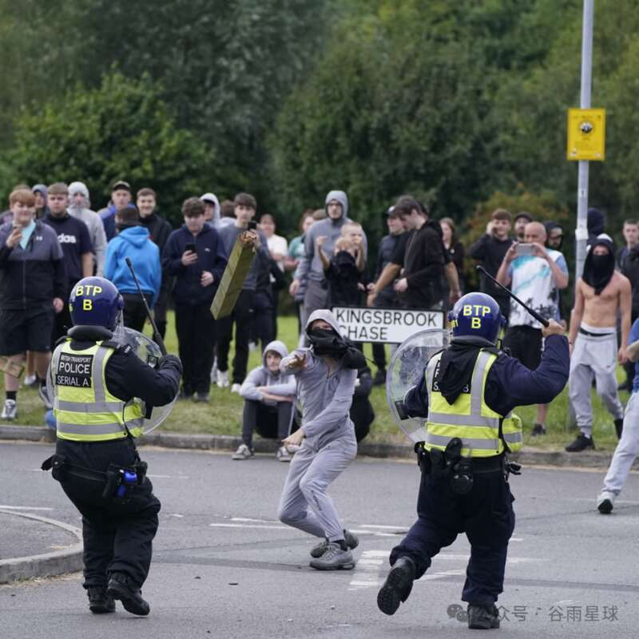
不过我的担心不是在当下。
我留意到在BBC公布的逮捕者画像中，专门分类了「20岁以下」的暴乱者，有三位年轻人位列其中，分别是18岁、19岁和18岁，他们让我想起了不久前自己的种族歧视遭遇。
一类歧视是挤眉弄眼、不怀好意地冲着你喊「泥号」（你好），另一类则是青少年男孩在疾驰而过的车里口吐莲花「F**K, Chinese」。
而此次暴乱的主角大多数就是后者——极端右翼分子，英国纸媒甚至用「法西斯分子」这个更具谴责性的称呼来指称他们。
我不确定种族仇恨会随着他们长大而变少直至消失，也不确定极端种族主义的暴力火焰有一天会不会无端烧到自己身上。
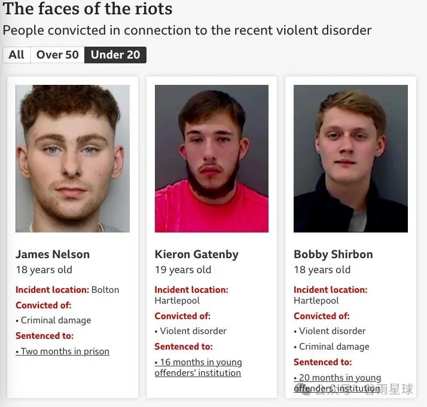
留在英国更难了？
和暴乱引发的隐忧相比，签证问题带来的影响更大。
早在今年工党拿下大选前，国际留学生家属签证和工作签证的新政策已经引发了许多留学生的担忧。
从今年1月起，英国不再给除博士和研究型硕士以外的留学生家属下发签证，当时许多媒体对此的解释是此举更多针对印度籍留学生，因为印度留学生大多是以移民为目的、拖家带口前来上学。
可以理解这是为了限制移民而做的收缩，不过也给中国低龄留学家庭造成了不小的困扰。
■英国首相苏纳克此前针对移民的发言，我们也写过英国签证政策的来龙去脉
如果说该签证政策对中国留学生的影响不算大，那么工作签证的影响则是具体而直接的。
英国对中国留学生的吸引力很大一部分在工作签证上，自2008年起，英国政府为了吸引并留住优秀的人才，引入了PSW（Post-Study Work）签证类别，只要在英国获得了学士、硕士、博士学位，便可以申请PSW签证，享受2年在英国工作、生活的时间（博士生是3年）。
许多有移民意向的留学生在2-3年PSW签证期满之后，会考虑继续申请工作签证，5年工作签证，便意味着拥有了可以申请英国永久居主权的资格。
但是从今年4月起，工作签证有了新的规定，从之前的无任何要求，变成比较苛刻的申请标准——申请人需达到最低工资标准年薪38700英镑。
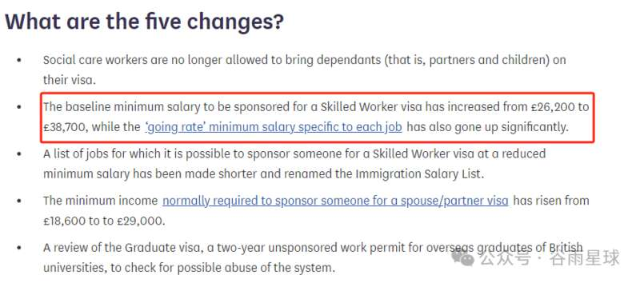
这是一个什么薪资标准呢？
我身边刚毕业并拿着PSW签证工作的中国留学生们都觉得，靠工签拿永居几乎是不可能了。这也导致更多中国留学生直接选择放弃两年PSW签证，回国就业。
为了收缩移民口径，英国政府先倒过来收回了给国际留学生们的优惠，这反过来也让英国留学的性价比大打折扣，因为原来的优惠被收回的同时，你还能切身体会到上涨的学费、房租和物价。
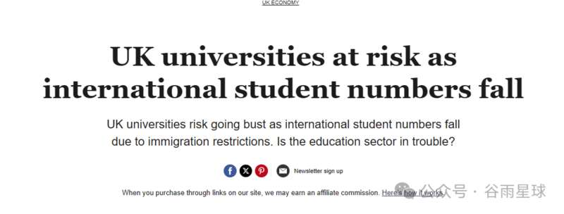
■为英国贡献了大笔收入的国际学生出走，引发了英媒的担忧关于移民利弊的辩论，一直以来都是英国社会非常关注的问题。
对于许多持负面意见的民族主义者来说，拿着工作签证的移民很大程度上代表着，本该属于本国人但却被夺取了的工作机会。
更有甚者会将此再做延伸，将底层白人的贫困与工作机会被「掠夺」联系为因果关系，按照这个逻辑，不难理解他们的「仇外」心理了。
所以今年工党上台之后的新政之一，就是要减少对全球人才引进的依赖，通过提供给本国人更多的培训，将原本需要引进人才的岗位留给本国人。
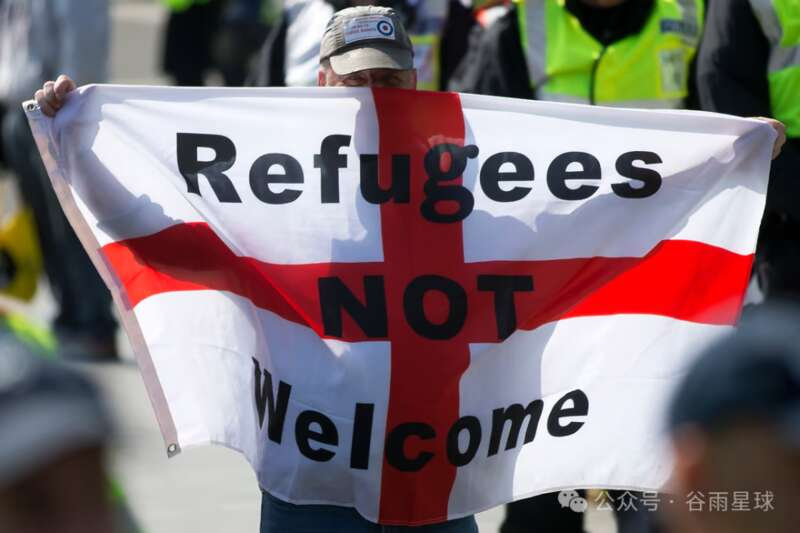
■针对移民的仇恨和游行在英国历来已久
存在已久的移民问题
如果说合法移民与工作机会相关，那移民中的非法移民和难民跟社会治安的关系更大。
相比于美国的枪支自由，英国社会的禁枪政策使得中国留学生家庭对英国社会安全更有信心，这也成为许多人在英美之间做选择的权衡之一。
但是以伦敦为首的英国各大城市，还是时不时会因为持刀伤人等暴力事件上新闻头条。
除此之外，伦敦的社会治安也常被留学生群体和游客诟病。
毫不夸张地说，每一位来英国旅行、留学的中国人，人手必备一根防盗手机绳。饶是如此，我依然听说过一位中国留学生在一年之内连着被偷三个手机的悲惨经历。
■在小红书上，如何在英国避免被偷，成为每个留学生和游客必学内容
说起偷盗，还曾听留学生说过租房经验不要在council house附近。
可以把Council house看作是英国政府的廉租房，为低收入群体服务。这位学生所住的公寓楼发生过几起快递被偷的事情，通过调取监控发现是来自附近council house的小孩偷走的，自此之后公寓里所有的快递都变成了当面交付。
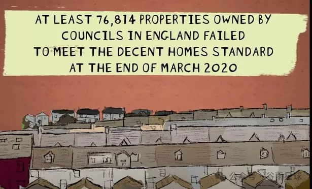
■Council house不安全的问题被诟病已久以我在伦敦居住和city walk经历为例，东伦敦shadwell附近的印巴区和北伦敦hackney哈克尼一带，完全符合中国留学生的戏言「白天乱得有活力，晚上乱得没秩序」，即使是白天在街道上行走，也能时不时闻到某种（不可描述的）烟草味。
这些与社会治安相关的负面事件说大也大，说小也小。
出现的时候，人们常将此与「黑人」、「印巴区」、「低收入人群」等群体或种族相关联，可以说这也让整个社会更加分裂，最近发生的一系列暴乱就是证明。
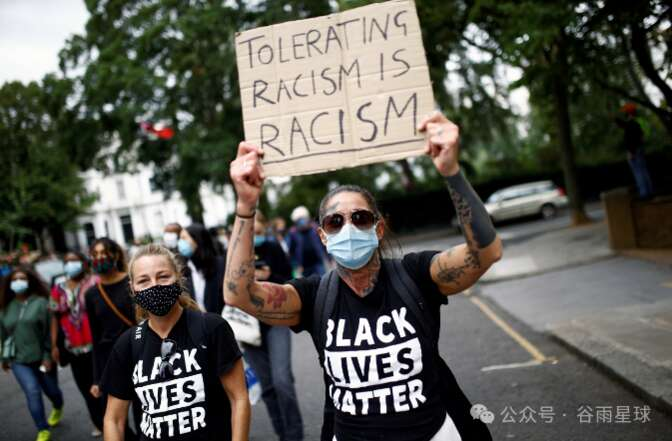
而中国留学生群体在英国的左派和右翼的辩论之间，为了自己的安全活得小心翼翼。「如何保障自己的安全」，是留学生群体时刻绷着的弦。
它关乎着，看到路边的乞讨者要躲开走还是给他钱；迎面走来醉醺醺的大汉要不要避免眼神接触；晚上十点之后尽量不出门；租房子尽量不出伦敦一二区；在某书多留意相关信息，以便在危机时刻知道如何应对……
在国外待久了会慢慢悟到，关于「安全」这一课，学校和课堂里能学到的太有限了，而现实总是充满血淋淋的教训，这也导致我做很多决定之前，「安全第一」是首个准则。
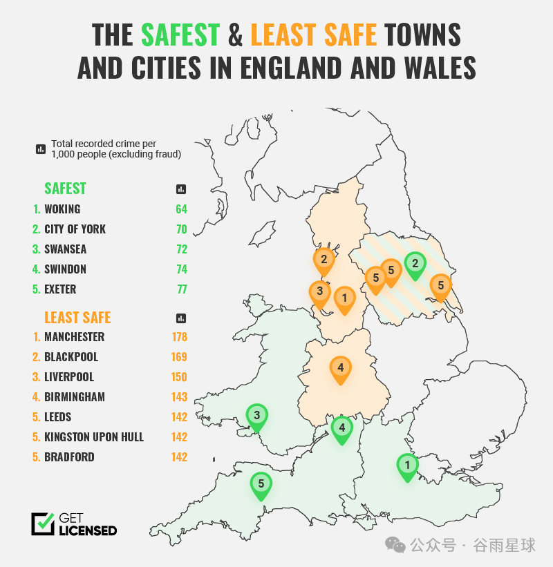
■英国最安全和最不安全的城市
当然，英国人也意识到了这一点。
就在今年工党大选获胜之后，新政中便包含了遣送难民、增加警察人数、改善伦敦治安的内容，期待在不久的将来有一个更安全的社会。
最后，还想分享一个私人的感受。
经历了8月7日晚由未发生的暴乱而引发的担忧之后，今天出门在公交车上意外看到路边一块广告牌「Thank God for Immigrants」，看到它我心里下意识地很感动。
它让我感受到这个社会更加吸引人的一面，也是大部分友好和平的市民在反右翼活动中倡导的：diversity & unity。
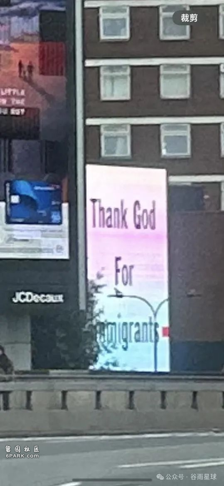